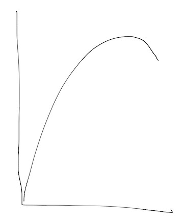

It is difficult to always be improving in the software industry. In creative fields, many artists talk about churn. When starting out, there’s an enormous amount of work to produce to get better. If you’re new, there’s a massive amount of bad code you need to write. That’s OK, it’s necessary. But the rate of improvement decays as time progresses. As your notoriety grows, you can no longer just crank out code to get better, how can you preserve some rate of improvement? It feels like the rate of learning looks like this:

Why does it go down? We can speculate. Old information conflicts with newer information. Experienced engineers get promoted beyond the engineering and their knowledge goes stale. How does an experienced individual get technically stronger? Let’s throw a few ideas:
- Explore related fields
- Study more in depth the current field
- Teach what you know
These strategies provide a different kind of “churn”. They look less like the traditional work of programming, but they provide more leverage, prestige, and challenges. It’s not too different from management.
The benefits of exploring existing, related fields is obvious: the expert becomes a beginner again. A beginner’s mind reopens vulnerability that experts have long eliminated, and too many avoid. Different experiences provide different perspectives to your craft. It’s why diverse teams are better than mono-cultured ones. An example is artificial intelligence, where most of the successful algorithms are based on neuroscience. That doesn’t preclude you from working in your current field, but it’s a way to curate ideas and techniques you wouldn’t otherwise have.
While exploring other fields is much easier to learn a breath of information. Narrowing solidifies the knowledge already known. It’s similar to starting out as a civil engineer before learning physics. The engineering brings practical experience to theory. It provides intuition to theoretical concepts. This fills gaps in your knowledge both in known boundaries and unexplored territories. It’s a two-way street, as theory is also improved through practice. Personally, this deep dive creates an exciting dilemma: we know so little in most areas. This is both good and bad. Bad since we have so little concrete knowledge. Good since it’s easy to contribute to the pool of human knowledge. This much applies to every industry, for every specialty. It doesn’t take long to get to the edge of human knowledge in one particular field.
Last, but not least, teaching is another form of learning. Learning something gives you a unique opportunity to do one thing: explain what was the tipping point to make you understand something in the first place. Teaching is one of the best ways to capture fleeting knowledge. That’s why I’m happy to work with newcomers - they’re sometimes more helpful to me than I am to them. Like debaters that forge their arguments in battle, I’ve sharpened my thought by explaining my ideas to others. It’s far less confrontational too, if that’s not quite your thing. In short, brilliance without collaboration is impossible. Helping is definitely mutual.
There are overlapping similarities behind executing on these tactics. In fact, it’s similar to how many started out in this industry. Work on interesting projects. That’s why you grew. There happened to be more knowledge to absorb at the time. Those tactics are parts of what made you become an expert in the first place. Many times people let their knowledge decay too far into ruin, instead of finding ways to build upon their knowledge.
I happen to draw experience from many past projects. From using tools like Photoshop, Flash, and 3DS Max. Then writing games in C++, C#, and Python in game jams. Or implementing game algorithms on top of classic games. Haphazardly, learn some screencasting software to teach Django or present how to reverse engineer. Build a site that provides utility, then use that site’s data to visualize in d3. Then re-deploy the site in a half-dozen different ways to understand devops. And there’s also writing on this very blog1.
That’s a lot of projects. I’ve accidentally stumbled into many of them with an irresistible excitement. Others were like trudging through mud of demotivation. Interesting doesn’t necessarily mean you’ll love it, but it may expand your empathy for developers coming from a different perspective.
These projects will be frustrating. Some will be unfruitful; some of my projects were never finished. But it’s the fastest way I know how to learn. But the project has to be motivating enough to drive through the tough challenges. You need to trick yourself that the end goal is worth it, even though it’s only the journey that matters.
Isn’t this advice the same as when you’re a beginner? Almost. You need to do more while working on these projects: think.
You must mentally refactor what you learn. That helps when you need to explain the concepts you’ve learned or how to build mental models of new, similar concepts. Try to derive mental schemas you can reapply in different contexts. Learn good object-oriented design patterns, then learn functional patterns. Try to describe OO patterns as functional ones and vice versa2. Try explaining coding style to a non-developer.
Why build schemas? They’re abstractions for the mind. They let you skip the implementation detail if needed. Engineers focus on the tools and the languages too often. Those things all have one thing in common: it’s knowledge that decays. Tools will always change; programming languages come and go. Building schemas is extracting your experience from the tools and languages you use. It’s high-density knowledge. To refine your schemas, you need to refactor your tool-specific knowledge. Instead of being an expert at one tool, could you generalize this skill to be better at a class of tools?
An example is working in a strongly-typed language. I tend to apply typed-language designs into other programs - even if it’s in a dynamically-typed language. Likewise in avoiding mutation and multi-threading - it improves understanding of the program.
After using many languages, you become relatively ignorant of syntax. Instead, you’ll be scanning for larger patterns. Become the chess master that can recall layouts of chess positions through higher-level patterns instead of the beginner trying to memorize the location of every piece.